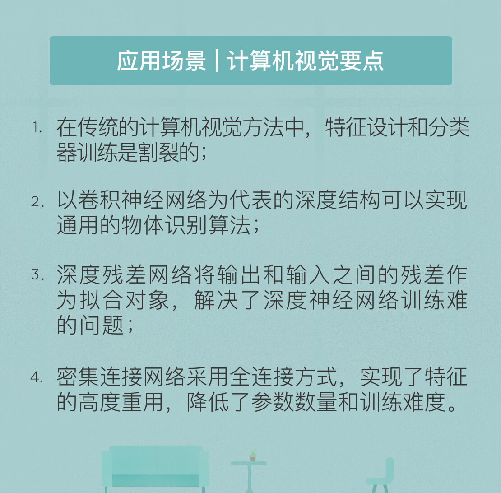

- 00 开篇词 人工智能：新时代的必修课.md.html
- 01 数学基础 九层之台，起于累土：线性代数.md.html
- 02 数学基础 月有阴晴圆缺，此事古难全：概率论.md.html
- 03 数学基础 窥一斑而知全豹：数理统计.md.html
- 04 数学基础 不畏浮云遮望眼：最优化方法.md.html
- 05 数学基础 万物皆数，信息亦然：信息论.md.html
- 06 数学基础 明日黄花迹难寻：形式逻辑.md.html
- 07 机器学习 数山有路，学海无涯：机器学习概论.md.html
- 08 机器学习 简约而不简单：线性回归.md.html
- 09 机器学习 大道至简：朴素贝叶斯方法.md.html
- 10 机器学习 衍化至繁：逻辑回归.md.html
- 11 机器学习 步步为营，有章可循：决策树.md.html
- 12 机器学习 穷则变，变则通：支持向量机.md.html
- 13 机器学习 三个臭皮匠，赛过诸葛亮：集成学习.md.html
- 14 机器学习 物以类聚，人以群分：聚类分析.md.html
- 15 机器学习 好钢用在刀刃上：降维学习.md.html
- 16 人工神经网络 道法自然，久藏玄冥：神经网络的生理学背景.md.html
- 17 人工神经网络 一个青年才俊的意外死亡：神经元与感知器.md.html
- 18 人工神经网络 左手信号，右手误差：多层感知器.md.html
- 19 人工神经网络 各人自扫门前雪：径向基函数神经网络.md.html
- 20 人工神经网络 看不见的手：自组织特征映射.md.html
- 21 人工神经网络 水无至清，人莫至察：模糊神经网络.md.html
- 22 深度学习 空山鸣响，静水流深：深度学习概述.md.html
- 23 深度学习 前方有路，未来可期：深度前馈网络.md.html
- 24 深度学习 小树不修不直溜：深度学习中的正则化.md.html
- 25 深度学习 玉不琢不成器：深度学习中的优化.md.html
- 26 深度学习 空竹里的秘密：自编码器.md.html
- 27 深度学习 困知勉行者勇：深度强化学习.md.html
- 28 深度学习框架下的神经网络 枯木逢春：深度信念网络.md.html
- 29 深度学习框架下的神经网络 见微知著：卷积神经网络.md.html
- 30 深度学习框架下的神经网络 昨日重现：循环神经网络.md.html
- 31 深度学习框架下的神经网络 左右互搏：生成式对抗网络.md.html
- 32 深度学习框架下的神经网络 三重门：长短期记忆网络.md.html
- 33 深度学习之外的人工智能 一图胜千言：概率图模型.md.html
- 34 深度学习之外的人工智能 乌合之众的逆袭：集群智能.md.html
- 35 深度学习之外的人工智能 授人以鱼不如授人以渔：迁移学习.md.html
- 36 深度学习之外的人工智能 滴水藏海：知识图谱.md.html
- 37 应用场景 你是我的眼：计算机视觉.md.html
- 38 应用场景 嘿, Siri：语音处理.md.html
- 39 应用场景 心有灵犀一点通：对话系统.md.html
- 40 应用场景 数字巴别塔：机器翻译.md.html
- 一键到达 人工神经网络复习课.md.html
- 一键到达 应用场景复习课.md.html
- 一键到达 数学基础复习课.md.html
- 一键到达 机器学习复习课.md.html
- 一键到达 深度学习之外的人工智能复习课.md.html
- 一键到达 深度学习复习课.md.html
- 一键到达 深度学习框架下的神经网络复习课.md.html
- 推荐阅读 我与人工智能的故事.md.html
- 新书 《裂变：秒懂人工智能的基础课》.md.html
- 直播回顾 机器学习必备的数学基础.md.html
- 第2季回归 这次我们来聊聊机器学习.md.html
- 结课 溯洄从之，道阻且长.md.html
- 课外谈 “人工智能基础课”之二三闲话.md.html
- （课外辅导）人工神经网络 拓展阅读参考书.md.html
- （课外辅导）数学基础 拓展阅读参考书.md.html
- （课外辅导）机器学习 拓展阅读参考书.md.html
- （课外辅导）深度学习 拓展阅读参考书.md.html
- 捐赠
37 应用场景 你是我的眼：计算机视觉
2015年，微软上线了一个颜龄识别的机器人网站 how-old.net。这个网站可以根据用户上传的照片从面相上分析人物的年龄，一经推出便火爆全球，判断的正确率也很不赖。
而在背后支撑这个娱乐性网站的，正是微软基于机器学习和深度学习的人脸特征提取技术。微软的颜龄识别算法首先执行人脸检测，再利用常见的分类和回归算法实现性别判定和年龄判定，在机器学习的框架下完成所有的任务。
计算机视觉称得上是个古老的学科，它的任务是用计算机实现视觉感知功能，代替人眼执行对目标的识别、跟踪、测量和处理等任务，并从数字图像中获取信息。传统的计算机视觉方法通常包括图像预处理、特征提取、特征筛选、图像识别等几个步骤。
对于给定的数字图像，计算机在处理时要先执行二次采样、平滑去噪、对比度提升和尺度调整等预处理操作，再对图像中的线条、边缘等全局特征和边角、斑点等局部特征，乃至更加复杂的运动和纹理特征进行检测，检测到的特征会被进一步用来对目标进行分类，或者估测特定的参数。
虽然取得了不俗的进展，但计算机视觉的传统方法依然存在很大的局限，问题就出在待提取的特征要由人工手动设计，而不能让计算机自主学习。检测图像中的足球需要人为地设计出黑白块的特征，如果检测的对象变成篮球，那就要重新设计曲线纹路的特征。这样的计算机视觉其实是人类视觉的延伸，它的识别本质上讲还是由人类来完成的。
如此一来，良好特征的设计就成为了视觉处理的关键和瓶颈。手工设计特征既需要大量的专门领域知识，也需要不断测试和调整，努力和运气缺一不可。而另一方面，现有的图像分类器都是像支持向量机这样的通用分类器，并没有针对数字图像的特征做出专门的优化。想要对特征设计和分类器训练这两个独立过程做出整体上的联合优化，其难度可想而知。
好在，深度学习的横空出世改变了一切。在2012年的大规模视觉识别挑战赛（Large Scale Visual Recognition Challenge）上，辛顿带着他的深度神经网络AlexNet横扫了所有基于浅层特征的算法，以16.42%的错误率摘得桂冠。相形之下，东京大学26.17%的错误率和牛津大学26.79%的错误率显得黯然失色。
在图像识别中，应用最广的深度模型非卷积神经网络莫属。2012年大放异彩的AlexNet采用了包含7个隐藏层的卷积神经网络，总共有65万个神经元，待训练的参数数目更是达到了惊人的6千万。如此复杂的模型在训练上也会颇费功夫：用于训练的图像达到百万级别，这将花费2个GPU一周的时间。
但这样的付出是值得的。和传统的数字图像处理技术相比，卷积神经网络不仅能够实现层次化的特征提取，还具备良好的迁移特性，在包含不同对象的图像中都能取得良好的效果。关于卷积神经网络的原理，你可以回顾一下之前的介绍。
在计算机视觉领域，微软可以说是厚积薄发的巨头。以微软亚洲研究院为主的研究机构深耕于深度学习在计算机视觉中的应用，取得了一系列令人瞩目的成果。2015年，微软亚洲研究院的何恺明研究员提出了深度残差网络（Deep Residual Network），又打开了计算机视觉一扇崭新的大门。
顾名思义，残差（residual）是残差网络的核心元素，但这个概念却并不复杂。没有引入残差的普通网络将输入\(x\)映射为\(H(x)\)，训练的意义就在于使用大量训练数据来拟合出映射关系\(H(x)\)。可残差网络独辟蹊径，它所拟合的对象并不是完整的映射\(H(x)\)，而是映射结果与输入之间的残差函数\(F(x) = H(x) - x\)。换句话说，整个网络只需要学习输入和输出之间差异的部分，这就是残差网络的核心思想。
很简单吧？可这个小改动却蕴藏着大能量。和8层的AlexNet相比，何恺明论文中的残差网络达到了152层，真可以说是相当深了。网络深度的增加也带来了性能的提升，在2015年的大规模视觉识别挑战赛，深度残差网络以3.57%的错误率技压群雄，比以往的最好成绩提升了1%以上。可别小瞧这1个百分点，从95分进步到96分的难度可远远大于从85分进步到95分的难度。
为什么引入残差能够带来优良的效果呢？这是因为残差网络在一定程度上解决了深度结构训练难的问题，降低了优化的难度。在深层网络中，层与层之间的乘积关系导致了梯度弥散（gradient vanishing）和梯度爆炸（gradient explosion）这些常见的问题，参数初始化不当很容易造成网络的不收敛。但残差网络有效地解决了这个问题，即使是一百层甚至是一千层的网络也可以达到收敛。
为什么残差网络具有这样良好的性能？一种解释是将残差网络看作许多不同长度训练路径的集合。虽然网络的层数很多，但训练过程并不会遍历所有的层次，110层残差网络中的大部分梯度最多也只会涉及34个层的深度。如果说传统的梯度下降走的是人满为患的经济舱通道，那残差网络中的梯度走的就是畅通无阻的头等舱通道。这意味着较长的路径不会对训练产生任何的梯度贡献，残差网络也正是通过引入能够在整个深度网络中传递梯度的短路径绕开了梯度弥散的问题。
从表示能力上看，深层模型应该是优于浅层模型的，因为将多出来的层设置为恒等映射，深层模型就会退化为浅层模型，因而深层模型的解集应该包含浅层模型的解集。但深层模型并不是将浅层模型简单地堆叠起来。当实际网络的层数增加时，受收敛性能的影响，无论是训练误差还是测试误差都会不降反升。残差的操作相当于用恒等映射对待学习的未知映射做了一重预处理，因而学习的对象就从原始的未知映射\(H(x)\)变成了对恒等映射的扰动\(F(x)\)，这就使深度结构的优势得以发挥。
除了残差网络之外，另一个新结构是由美国康奈尔大学和Facebook人工智能研究院合作提出的密集连接卷积网络（Densely Connected Convolutional Network）。网络中的“密集连接”指的是网络中的任意两层都有直接的连接，每个层的输入都是之前所有层输出的集合。这样一来，每个层次都要处理所有提取出来的低层与高层特征。
密集网络的研究者提到，他们的想法借鉴了残差网络的思想，但密集网络的独特之处在于所有层都可以直接获取前面所有层中的特征，而残差网络中的层只能获取到和它相邻的那个层次。如果能够在空间上想象一下密集连接网络，你就会发现它和之前所有卷积网络模型的区别在于对层次化的递进结构的改进，这个模型更像是个全连接的扁平化网络。全连接的特性提升了结点，也就是不同层之间的交互性，让提取出的特征在不同的层次上得到重复的利用，起到整合信息流的作用。
全连接的另外一个优势是训练难度的下降。在每一层中，损失函数和原始输入信号都是直接连接的，因此也能够避免连续相乘导致的梯度弥散。
由于密集网络采用全连接的方式，参数数目和层数目之间就是平方的关系，因而当层数较多时，密集网络会出现参数爆炸的问题。为了克服连接重复利用导致的特征冗余，密集网络的每一层都只学习非常少的特征，而不像其他网络一样，在每个层上都要输出成百上千个特征。
此外，密集网络还设计了瓶颈层（bottleneck layer）加变换层（translation layer）的结构，借此降低参数的数量。和残差网络相比，密集网络的参数数目不但不会增加，还有大概一半的下降。直接通过改变网络结构达到正则化的效果，密集网络绝对称得上匠心独运。
虽然在近两年取得了突破性的进展，但对于深度学习的质疑依然存在。超大的参数数量不由得让人怀疑深度学习得到的其实就是某种程度的过拟合，而训练中的参数选择看起来也没有跳出经验科学的阶段。这也是对深度学习的一点警示：工程上的进展固然让人欣喜，但理论问题的解决依然任重道远。
今天我和你分享了深度学习在计算机视觉，主要是物体识别中的应用，要点如下：
- 在传统的计算机视觉方法中，特征设计和分类器训练是割裂的；
- 以卷积神经网络为代表的深度结构可以实现通用的物体识别算法；
- 深度残差网络将输出和输入之间的残差作为拟合对象，解决了深度神经网络训练难的问题；
- 密集连接网络采用全连接方式，实现了特征的高度重用，降低了参数数量和训练难度。
无论是残差网络还是密集网络，其实都不是惊天动地的理论突破，而是用较为简单的改进换来了良好的效果。那么这会给你带来什么样的启示呢？
欢迎发表你的观点。
拓展学习
关于计算机视觉，可以关注国际计算机视觉大会 ICCV（International Conference on Computer Vision），每两年举办一次。ICCV从 1987 年开始，已有 30 年的历史，是计算机视觉顶级会议。

© 2019 - 2023 Liangliang Lee. Powered by gin and hexo-theme-book.